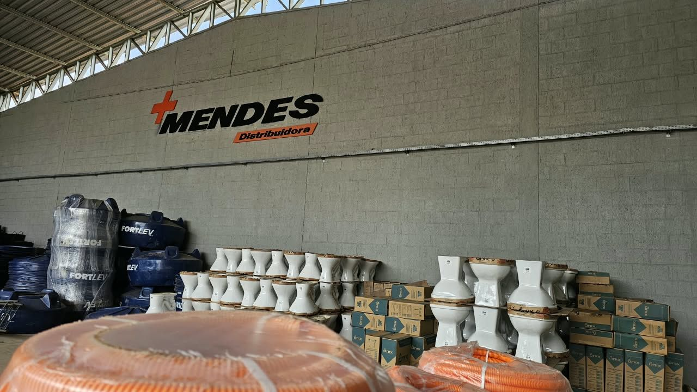
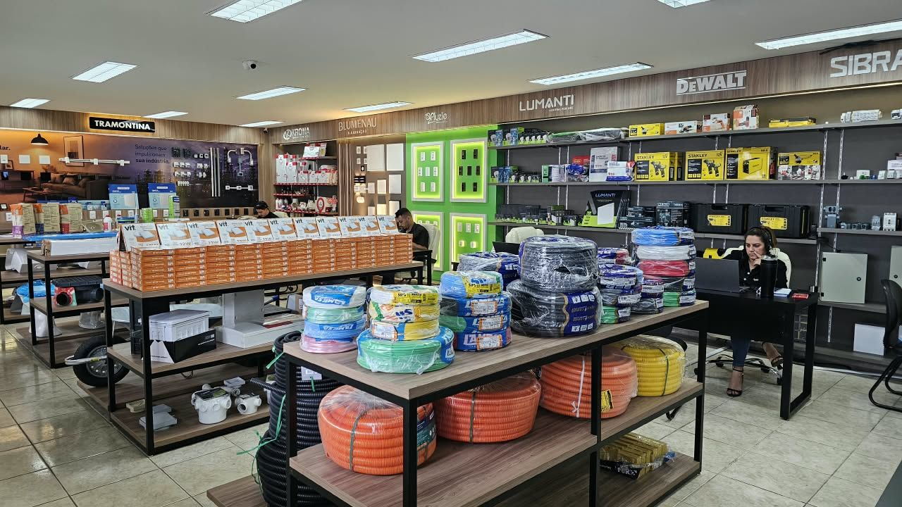
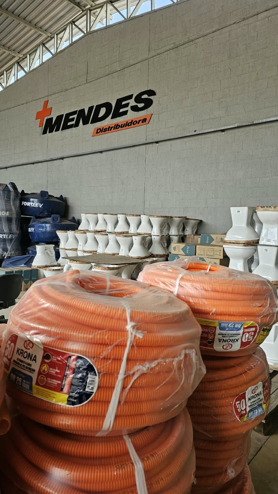
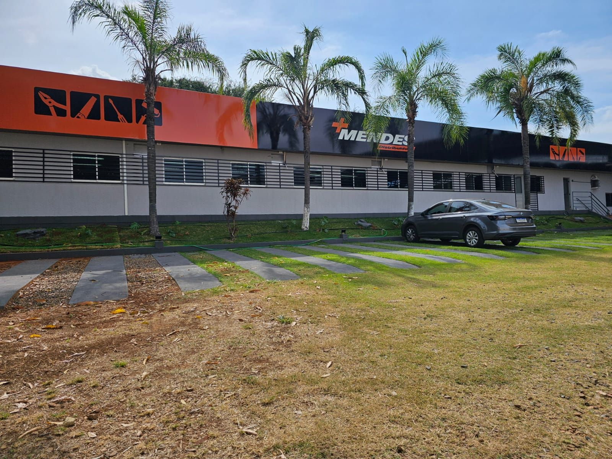
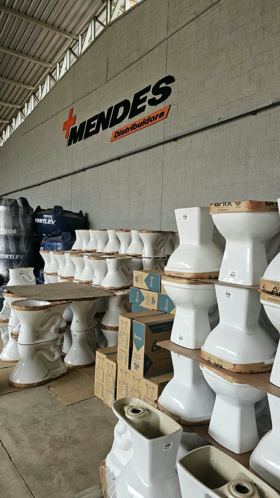

De Goiânia para todo o Brasil
Uma história de empreendedorismo, transformação e crescimento, construída ao lado de quem constrói.
Nossa história
Grandes histórias são construídas por pessoas que enxergam oportunidades, acreditam em seus projetos e trabalham para transformá-los em realidade.
A Mais Mendes começou em 2001, em Goiânia, com uma loja de materiais elétricos e uma indústria de padrões elétricos. Desde o início, a empresa esteve ligada à construção civil, acompanhando as necessidades de profissionais, empresas e consumidores.
O mercado evoluiu, novas oportunidades surgiram e a Mais Mendes passou por diferentes fases. Foi em 2019 que começou um dos capítulos mais importantes dessa trajetória.

25 anos em 5 capítulos
Da loja de bairro à distribuidora que atende vários estados.
- 2001
O começo em Goiânia
Uma loja de materiais elétricos e uma indústria de padrões elétricos.
- 2019
Uma nova direção
Em junho, Lucas assume a empresa num momento de crise e inicia a reestruturação.
- 2019
Além da elétrica
O portfólio ganha soluções hidráulicas e a Mais Mendes vira distribuidora.
- 2020
Para todo o Brasil
Novos canais de venda e clientes em diferentes regiões do país.
- 2026
25 anos de história
Mais de 2.000 produtos e uma visão voltada para crescer com os clientes.
2019: uma nova visão
Toda grande transformação começa com uma decisão.
Em junho de 2019, Lucas decidiu investir no potencial da Mais Mendes. O cenário era desafiador: a empresa enfrentava uma grave crise financeira e precisava de uma nova direção.
Com espírito empreendedor, ele reorganizou a empresa, ampliou o portfólio e buscou novas oportunidades comerciais. A Mais Mendes passou a oferecer soluções hidráulicas e a se firmar como distribuidora cada vez mais completa e competitiva.
O que começou como um projeto de reconstrução virou uma trajetória de expansão.

De Construtor para Construtor
A construção faz parte da nossa história. Está nos produtos que vendemos, nos profissionais que atendemos e na forma como nos relacionamos.
Cada projeto tem suas particularidades, e a escolha dos materiais influencia o andamento de uma obra. Por isso oferecemos variedade, qualidade, preço competitivo e atendimento especializado.
No que acreditamos
Bons negócios são construídos com confiança, transparência e relacionamentos duradouros.
Confiança
Produtos de marcas reconhecidas, nota fiscal em todo pedido e regras de frete e troca escritas.
Transparência
Preço, frete e prazo à vista antes de pagar, sem esperar retorno de orçamento.
Relacionamento
Atendimento de quem entende de obra, para eletricistas, instaladores, construtoras e para quem reforma a casa.
Nossa estrutura
Loja, estoque e expedição no Setor Capuava, em Goiânia.





Parcerias que dão garantia
Somos parceiros do CREA-GO e trabalhamos com fabricantes como Tramontina, Krona, Lamesa, Stanley e DeWalt.
Profissionais com registro no CREA-GO têm condições exclusivas na Mais Mendes.
A história continua
Seguimos investindo na empresa, nas parcerias e em novas possibilidades para nossos clientes. Cada conquista é também o ponto de partida para novos projetos.
Mais Mendes Distribuidora. Desde 2001, construindo nossa história.